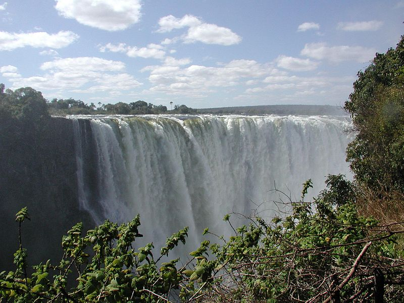

Victoria Falls
Located on the Zambezi River at the border of Zambia and Zimbabwe, Victoria Falls is one of the largest and most famous waterfalls in the world.

Niagara Falls
Niagara Falls, situated on the border of the USA and Canada, is renowned for its beauty and is a valuable source of hydroelectric power.

Angels Falls
Angel Falls is a waterfall in Venezuela. It is the world's tallest uninterrupted waterfall, with a height of 979 metres, and a plunge of 807 m. The waterfall drops over the edge of the Auyán-tepui mountain in the Canaima National Park, a UNESCO World Heritage Site in the Gran Sabana region of Bolívar State.

Iguazu Falls
Straddling the border between Argentina and Brazil, Iguazu Falls is one of the largest waterfall systems in the world, with 275 individual drops.